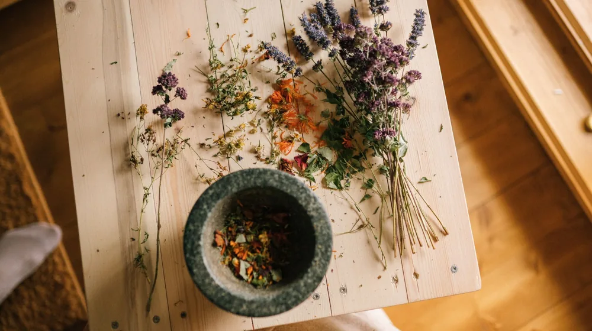

한방 족욕, 처음인데 뭐부터? 초보자를 위한 핵심 가이드
사진: Valeria Boltneva / Pexels (무료 이미지, 출처 표기)
한방 족욕, 왜 시작해야 할까요? (핵심 효능)

일상의 피로와 스트레스가 쌓일 때, 따뜻한 한방 족욕은 몸과 마음을 달래는 효과적인 방법 중 하나입니다. 한의학에서는 발을 '제2의 심장'이라고 부르며, 발을 따뜻하게 하는 것이 전신 혈액순환 개선에 매우 중요하다고 보았습니다. 족욕은 체온을 높여 신진대사를 원활하게 하고, 특히 한약재를 활용하면 특정 증상 완화에도 도움을 줄 수 있습니다.
일반적인 족욕만으로도 혈액순환 개선, 피로 해소, 숙면 유도 등 다양한 이점을 얻을 수 있지만, 여기에 개인의 체질과 증상에 맞는 한약재를 더하면 그 효과는 더욱 커집니다. 예를 들어, 몸이 차거나 소화가 잘 안 되는 분, 혹은 잠을 이루기 힘든 분들이 적절한 한약재를 활용한 족욕을 통해 증상 개선에 도움을 받는 경우가 많습니다.
초보자를 위한 한방 족욕 준비물 체크리스트
한방 족욕은 생각보다 간단하게 시작할 수 있습니다. 몇 가지 필수 준비물만 갖추면 집에서도 충분히 즐길 수 있습니다.
- 족욕통 또는 대야: 발목이 잠기고, 앉아서 편안하게 발을 담글 수 있는 깊이의 통이 좋습니다.
- 수건: 족욕 후 발의 물기를 닦고, 족욕 중 어깨에 덮어 체온 유지를 돕습니다.
- 따뜻한 물: 약 40~42℃ 정도의 온도가 적당합니다.
- 한방 족욕용 한약재: 시중에 판매되는 족욕용 티백이나 건조 한약재를 활용할 수 있습니다. 개인의 상태에 따라 적절한 한약재를 선택하는 것이 중요합니다.
- 온도계 (선택 사항): 정확한 물 온도를 맞추는 데 도움이 됩니다.
나에게 맞는 한약재 선택 가이드 (2026년 11월 기준)
한방 족욕의 핵심은 바로 '한약재'입니다. 다양한 한약재가 각기 다른 효능을 가지고 있으므로, 자신의 상태에 맞춰 선택하는 것이 중요합니다. 일반적인 증상에 따른 추천 한약재는 다음과 같습니다.
위에 제시된 한약재는 일반적인 추천이며, 개인의 체질이나 건강 상태에 따라 적합하지 않을 수 있습니다. 특히 특정 질환이 있거나 약을 복용 중인 경우, 족욕 전 한의사 등 전문가와 상담하여 자신에게 맞는 한약재를 선택하는 것이 가장 안전하고 효과적입니다.
올바른 한방 족욕 절차: 5단계 완벽 가이드
효과적인 한방 족욕을 위해서는 올바른 절차를 따르는 것이 중요합니다. 아래 5단계 가이드를 참고하여 편안하고 건강한 족욕 시간을 가져보세요.
한방 족욕 시 이것만은 꼭 주의하세요
한방 족욕은 대체로 안전하지만, 몇 가지 주의사항을 지키는 것이 좋습니다. 특히 몸이 약하거나 특정 질환이 있는 경우 더욱 세심한 주의가 필요합니다.
- 적정 온도와 시간 유지: 너무 뜨거운 물(43℃ 이상)이나 과도한 시간(30분 초과)의 족욕은 오히려 피부 화상이나 탈수를 유발할 수 있습니다. 땀이 가볍게 날 정도로 15~20분이 적당합니다.
- 음주 및 식사 직후 피하기: 술을 마신 후나 식사 직후에는 혈액이 위장으로 몰려있으므로, 족욕을 하면 소화에 방해가 될 수 있습니다. 최소 1시간 이후에 하는 것이 좋습니다.
- 특정 질환자 및 임산부 주의: 심혈관 질환, 고혈압, 당뇨병 환자나 임산부는 족욕 전 반드시 주치의나 한의사와 상담해야 합니다. 특히 임산부는 특정 한약재 사용에 주의가 필요합니다.
- 발에 상처나 염증이 있다면 자제: 발에 상처가 있거나 피부염, 무좀 등 염증이 있다면 상태를 악화시킬 수 있으므로 족욕을 피하는 것이 좋습니다.
- 몸에 열이 많은 경우: 평소 몸에 열이 많은 '열성 체질'인 경우, 족욕이 오히려 몸을 더욱 덥게 만들어 불편감을 줄 수 있습니다. 시원한 재료를 사용하거나 족욕 시간을 짧게 하는 등 조절이 필요합니다.
족욕 후에는 물기를 깨끗이 닦고, 양말을 신어 체온을 유지하는 것이 좋습니다. 충분한 수분 섭취로 탈수를 예방하고, 편안한 휴식을 취하며 족욕의 효과를 느껴보세요.
한방 족욕, 더 효과적으로 즐기는 팁
한방 족욕의 효과를 극대화하고 싶다면 몇 가지 팁을 활용해 보세요. 족욕 전후로 가벼운 스트레칭이나 발 마사지를 해주면 혈액순환을 더욱 촉진할 수 있습니다. 또한, 족욕하는 동안 좋아하는 음악을 듣거나 책을 읽는 등 심리적인 휴식을 취하는 것도 중요합니다.
아로마 오일을 한두 방울 첨가하는 것도 좋은 방법입니다. 라벤더는 숙면 유도에, 페퍼민트는 상쾌함과 피로 해소에 도움을 줄 수 있습니다. 다만, 아로마 오일도 피부에 직접 닿기 전 소량 테스트하고, 한약재와 함께 사용할 때는 전문가의 조언을 구하는 것이 좋습니다.
무엇보다 중요한 것은 꾸준함입니다. 매일 짧게라도 규칙적으로 족욕을 하면 몸의 변화를 더 쉽게 느낄 수 있습니다. 자신에게 맞는 한약재를 찾고, 건강 상태에 따른 정확한 조언을 얻기 위해서는 반드시 한의사 등 전문가와 상의하시길 권장합니다.
🔗 이 글도 함께 보면 좋아요: 한방 입욕제 초보 가이드: 똑똑하게 고르고 활용하는 핵심 비법
관련 추천 상품
이 포스팅은 쿠팡 파트너스 활동의 일환으로, 이에 따른 일정액의 수수료를 제공받습니다.